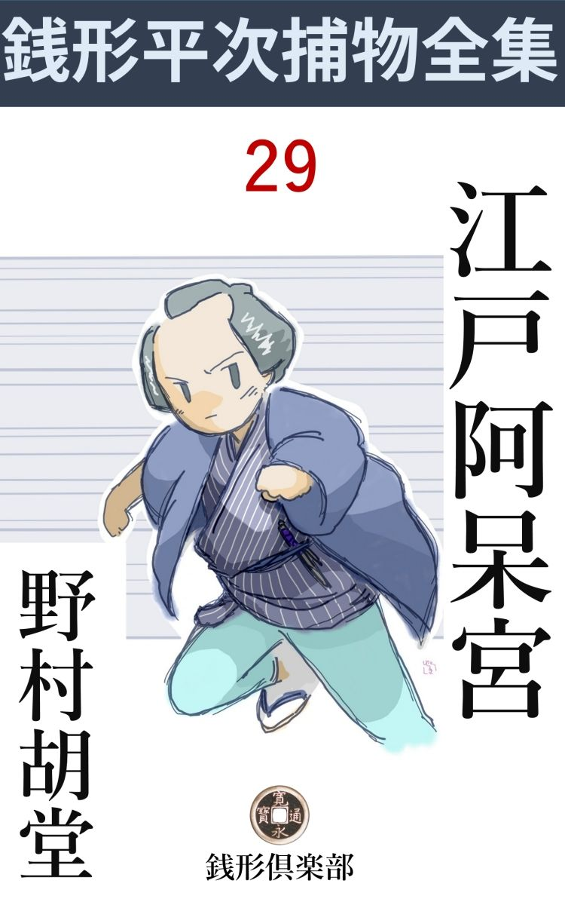
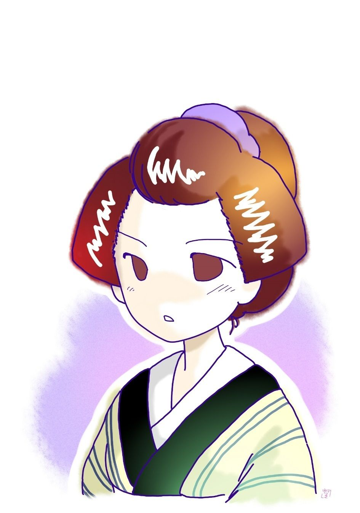

| 江戸阿呆宮: 銭形平次捕物全集第29話 (銭形倶楽部) | |
| 野村胡堂 | |
| ZENIGATA CLUB (2018) | |

一
江戸開府 以来の捕物の名人と言われた銭形平次も、この時ほど腹を立てたことはないと言っております。
滅多 に人間を縛らぬ平次が、歯 噛 みをして口惜しがったのですから。よくよくの事だったに相違ありません。
「親分、また神隠 しにやられましたぜ」
ガラッ八の八五郎が飛込んで来たのは、初夏の陽 が庇 から落ちて、街中に金粉 を撒 いたような、静かな夕暮でした。
「今度は誰だ」
平次は瞑想 から弾 き上げられたように、火の消えた煙管をポンと叩きました。
「石原町の日傭 取 の娘お仙と駄菓子屋の女房のおまき、それから石原新町の鋳掛 屋 の娘おらく------」
「三人か」
「三人は三人でも、今度のは一粒選りだ。ピカピカ後光の射すのをさらわれて町内の若い者は気違いのようになっていますぜ。殺生な真似をする野郎じゃありませんか」
「野郎だか怪物 だか見当が付かねえから弱っているのさ、とにかく行ってみよう」
平次は短かい羽織を引掛けると、ガラッ八の八五郎を案内に、本所へ飛んで行きました。
神隠し騒動------と言われたこの事件は、平次捕物のうちでも極めて重要な事件で、詳 しく書くと長大な一編の物語になりますが、要点だけをかい摘 むとこうでした。
去年の暮頃から、御府内の美しい娘が、一人二人ずつ行方不明になります。
最初のうちは駈落 が流行るとばかり思い込み、娘を失った親や、美しい女房に逃げられた夫は、内々心当りを捜 しておりましたが、何の手掛りもないばかりでなく、不思議なことに、行方不明になるのは女だけで、男の方には一人も間違いがありません。
年を越すと、その傾向は益々激しくなって、到頭毎月三人四人と大量の行方知れずがあるようになりました。
若い美しい女ばかり、声も立てず、形も残さず、描 いたものを拭き消すように行方知れずになるのですから、江戸中の不安は募 るばかり、そのうち誰ともなく------神隠しだと言い始めると、この宿命的な妖 神 の悪戯 に対して、町人達------わけても美しい娘や女房を持った人々は、本当に顫 え上がってしまいました。
そんな馬鹿な事があるものか------と江戸の御用聞手先は、一斉に奮起 しましたが、足跡一つ残さず、コトリと音も立てずに、若くて美しい娘達をさらって行く手際は、全く人 間 業 とは思われません。
こうして銭形の平次が登場するまで、江戸の娘達が三十人も姿を隠したでしょう。
「親分、こいつは諦めものかもしれませんよ。銭形の親分に三月越し塩を舐 めさせて、影法師も捕ませねえんだから」
ガラッ八は遠慮のないところをズケズケやります。
「------」
「神隠しじゃ平次親分でも歯が立たねえ」
「馬鹿野郎、若い綺麗な娘ばかり隠すような神様があるものか」
「ヘッ」
「人間の仕事だよ、それも飛んでもねえ悪党だ」
平次とガラッ八は、そんな事を言いながら、一応石原の利助を訪ね、利助の娘お品と一緒に、改めてお仙とおまきとおらくの家へ行って見ました。
お仙の父親というのは、定まった職のない日傭 取 で、
「お仙の阿魔 に男なんかあるものか、紅白粉は愚 か、油 一 貝 買 ったことのねえ身の上だ------ヘッ」
打ちひしがれたようになりながらも、貧乏を売物にする日頃の癖をそのまま、こんな事を言っております。
「どうして姿を隠したんだ、詳 しく話してくれまいか」
と平次。
「詳しいにもザッとにも話しようがねえ、久し振りで湯に入 りたいって言うから、湯銭だけ持たしてやると、フラリと出かけたっきり、今日で二日二た晩も帰えらねえ。親分の前 だが、そんな長い湯はどこの世界にあるんだ」
この期 に臨 んでも、自棄酒 が手伝うせいもあるでしょうが、棄 鉢 な洒落を言っております。次の駄葉子屋は留守。------
最後に石原新町の鋳掛屋へ行ってみると、
「銭形の親分さんで、お願いで御座います。娘を探し出して下さい。悪者が二階から押し込んで来やがって、娘をさらって行ってしまいましたよ、------男があるだろうって仰しゃるんですか、ジョ、冗談じゃありません。俺 の娘と来た日にゃ町内でも評判の孝行者で------」
親父 はおろおろしながらも、職人らしい威勢 のいい事を言っております。
「親分、怪物 は隣の天水桶を踏台 にして、庇 を渡って二階へ押し込んだんだね」
とガラッ八、天水桶の埃 の上に印された足跡のようなものや、板庇に残る、破損の跡などを念入りに調べております。
「庇を渡ったのはよく解るが、外から雨戸を開けて入ったのは、どんな手品を使ったんだ」
と平次、
「すると------？」
「娘のおらくさんが自分で雨戸を開けて二階から出たんだよ」
「そんな事があるものですか親分、家の娘に限って------」
鋳掛屋 の親父 はやっきとなりますが、平次は一向気にも留めない様子で、家の造り、雨戸の具合などを念入りに見た上、大渋りの親父を説き落して、娘の持物から、貧しい着物まで一と通り眼を通しました。
二
「八、お前は不思議だとは思わないか」
利助の家へ引揚げると、平次はいきなりこんな事を言い出します。
「何が不思議なんで、親分？」
「今まで誘拐 された女の身許を十五六軒も当って見たが、一人も藻 掻 いたのがねえ」
「------」
「皆んな気を揃えて、素直 にさらわれているのはどうしたわけだ。二三十人のうち、一人でもいいから悲鳴 をあげたのがあるとか、血を流したのがあると張合いがあるが、そっと消えてなくなったんじゃ、探 す方も励 みがねえ」
「------」
「駈落 でないことは確かだ、さらわれた娘と、何とか評判のあった男が皆んな指をくわえて取り残されているんだから」
「親分」
不意にお品が口を出しました。一時は銭形平次と張り合った御用聞、石原の利助の一人娘で、親の利助が身体を痛めてから、残された乾分 共を号令して、まだ若くも美しくもある癖に、江戸中の御用聞と肩を並べて、一歩も退 を取らぬ娘------だったのです。
「何だえ、お品さん」
「こんな事は、親分はとうに御存じでしょうが」
「いや、存外気がつかずにいるかもしれねえよ」
「さらわれ た娘やお神さんは、皆んなその日の物に困るような人達ばかりじゃありませんか」
「その通りだよお品さん、金持の娘や女房を狙 わないのは、何か仔細 のあることだろう。とにかく、諸人の難儀を黙って見ているわけには行かねえ。乗りかかった船だから、思い切り突っ込んで見ようと思うが、お品さん、手を貸して下さるかい」
「それはもう、本所から深川にかけて荒されているんですもの、どんな事でもして悪者を挙げなきゃア、父 さんの顔にもかかわります。こちらからこそお願い申さねばなりません」
お品は膝に手を置いて、物柔かに平次を振り仰 ぎました。少し淋しい細面 ですが、水火の中へでもといった気組が、その切れの長い眼や、キリリと引き締った唇にも溢 れます。

「こうなれば、最初からやり直しだ。お品さんは手蹟 が良いから、御苦労でも去年の暮からさらわれた人の名と、年と、町所 と商売とを調べ上げて、さらわれた日と時刻と、出来れば天気と手口を順々に書いておくんなさい」
「それ位の事でしたら、------でも筆蹟は良くありませんよ」
「それから八は、吉原 は言うまでもなく四宿 の盛り場を廻って、去年の暮頃から住み込んだ、新顔の妓 に出来るだけ逢って見るんだ」
「ヘッ、こいつは悪くねえ仕事だね」
「馬鹿、一々役得のつもりでデレデレしていると、限 がねえぞ、少く見積って三百人や四百人はいるだろう」
「親分は？」
「俺は昼寝をしながら考え事をするよ」
平次はこうして江戸中の岡っ引が思いも寄らなかった組織的な捜査網を張ったのでした。
三
それから半月経ったある日、江戸の街々の甍 の上に泳いだ鯉幟りが影を潜 めると、長い旅に出ていた平次はどこからともなく、神田の家へ帰って来ました。
「今帰ったよ」
「あ、お前さん------、お帰んなさい」
飛んで出た女房のお静は、片 襷 をかなぐり棄 てるように、縋 りつきたいのを我慢しいしい、姉さん冠りの手拭を取って、平次の肩から裾へ、旅の埃りを払ってやるのでした。
「留守中誰も来なかったかい」
「え、どなたもいらっしゃいません」
「お品さんと八が来る筈だが------」
平次はそう言いながら、井戸端で足を洗って、清々 した浴衣に着換えていると、八五郎とお品が伴 れ立ってやって来ました。
「親分、お帰んなさい------、半月昼寝をしていたにしちゃ、陽 に焦 けたね」
「つまらねえ事を覚えていやがる、ところで早速だが、頼んだ事はどうした」
平次はお品に座蒲団を勧めながら、明るい初夏の光を浴びて、何の憚 る様子もなくこう八五郎に話しかけるのでした。
「それが驚いたよ、親分、江戸の盛り場というものは、思いの外たいしたものだね」
「当り前 だ」
「妓 の数もあんなにあろうとは思いも寄らなかった。毎日、毎日白粉臭いのを首実験してつくづく厭になりましたよ、お仕舞 には嘔気 いて来る」
「飛んだ役得だ、------ところで、さらわれた女に一人でも出会 したか」
平次は冗談を言いながら膝を進めます。
「一人もいねえ、------身を沈めた理由を聞くと、どれもこれも気を揃 えて親の為だ。何だって江戸の盛場 にはあんなに親孝行が多いんだろう」
「馬鹿野郎」
「吉原 から始まって、千住、新宿、品川、板橋、の四宿を始め、大根畑から金猫銀猫、いろは茶屋と言った岡場所、比丘尼 から夜鷹 まで、八丁堀の旦那の御声掛りで、町役人立会の上虱潰 しに見て廻ったが、暮から先月へかけて、本所深川でさらわれた娘などは一人もいねえ」
ガラッ八は調子に乗って、少し仕方噺 になりました。
「御苦労御苦労、大方そんな事だろうとは思ったが、一度当ってみないうちは安心がならねえ、------ところでお品さん」
「親分、家の若い者に手伝わせて、こんなものを拵えて見ましたが、役に立つでしょうか」
お品は風呂敷を解くと、半紙横綴 十枚ばかりのを出して、極 り悪そうに平次の前に押しやります。
「これは大変だ、------口で言うと何でもないが、十何ヵ町を歩いて、これだけ書き上げるのは容易でない」
平次はパラパラとくりひろげて、ザッと眼を通しましたが、何に驚いたか、重ねて、
「お品さん、不思議なことがあるが、気がつきなすったか」
こう言いながら、膝の上の帳面を叩きます。
「施行 のことでしょう」
お品の賢い眼はまたたきます。
「それだよ、お品さん、人さらいのあった町は、みんな本 銀 町 の巴屋三右衛門が、施米 をした町ばかりだ」
平次は大変なことに気がつきました。
巴屋というのはその頃、越後屋と対抗した江戸一流の呉服屋で、呉服の外に、大伝馬町、金吹町などに唐物屋、米屋、金物屋などの店を持ち、今の百貨店 を幾つにも割ったような豪勢な商売をしている店でした。
主人の三右衛門は、やがて五十にも近い年配ですが、商売熱心な上に、世にも有難い心掛けの男で、年中善根を施 すのを楽しみにしている人間だったのです。
もっとも、長者番附の三役所で、金に不自由のないせいもあったでしょう。諸方の寄附寄進は固 より、付合の費用にも糸目をつけず、その上咋年の夏頃から、浅草、本所、深川を中心に、毎月八の日を決めて、一ヵ月一ヵ町の施米をはじめ、町役人の肝煎 で、その町内の者でさえあれば、一人三升ずつの米を施していたのです。
施米を貰う資格は、女か子供と限られました。いかに世並が悪いと言っても、凶作 飢饉 というのでもないのですから、大の男が笊 や風呂敷を持って三升の米を貰う行列に加わるわけにも行かず、女子供に限ったのは、まことに当然の制限でもあったのでした。
「親分、その上、人さらいは、施米のあった町を順々に荒していますよ」
お品は註を入れました。
「成程、これは面白い。去年の九月が長崎町、十月が松倉町、十一月は中ノ郷、十二月は飛んで森下、それから海辺 大工 町、それから浅草へ行って------これは驚いた、人さらいは執念深く施米の後を追っ駆けて歩いている」
「親分、そりゃどう言う判じ文だろう？」
ガラッ八の鼻はキナ臭く蠢めきます。
「巴屋は万両分限 の筆頭だ、まさか貧乏人の娘をさらって売る筈はねえ」
銭形の平次にも、これ以上のことは解りません。
四
「親分、どこで昼寝をしてなすったんで」
ガラッ八は改めて訊きました。
「ハッハッハッ、余ッ程俺の昼寝が癪 にさわったと見えるな------、安心するがいい、奥州街道、中仙道、甲州街道の手近な宿々を捜 し廻った上、東海道はわざわざ箱根まで行ってみたが、この半年の間に関所破りもなく、怪しい女も通らねえ。それから、別に人をやって品川と三崎と伊豆の船番所も当ったが、女を乗せた船なんか一隻 も通らねえとよ」
「ヘエ------」
昼寝どころの沙汰ではありません。たった十五日間に平次がどれだけ骨を折ったか、ガラッ八は今更唸 るばかりです。
「三十人の女は、江戸の盛り場にも売られず、上方へ送られた様子もねえとなると、どうしても江戸にいなきゃアならない筈だ、------もっとも、生きているか、死んでいるか、そこまでは解らないが------」
「親分」
お品はさすがに怯 えました。
「三十人の若い女だ。生きていれば泣き笑いもするだろう、殺されたにしても、死体のやり場があるめえ」
平次の言うのはもっともでした。江戸の真ん中で、三十の死体を、人目に触れないように処分する方法はありません。
「どうすりゃアいいだろう、親分」
とガラッ八。
「たった一つ工夫がある、------が、これはむずかしい、命がけの仕事だ」
平次は何やら思い惑 う様子です。
「親分、命がけの仕事なんざ、お茶漬 ほどにも考えちゃいないこちとら じゃありませんか。八、これをこうしろ------と威勢よくやっておくんなさい」
ガラッ八の八五郎は、はみ出した膝小僧を擦 りながら、上眼使いに平次の打ち沈んだ顔を睨め上げるのでした。
「手前 で間に合や、命惜しみなんぞするものか。だが、こいつはいけねえ、女の子でなきゃア役に立たない仕事なんだ」
口ではこんな荒っぽい事を言いながらも、平次の霑 んだ眼は、ガラッ八の純情を感謝しております。
「役に立つかどうか解りませんが、私ならどうでしょう」
お品はつつましく口を容れました。
「お品さん、それはいけねえ、そんな事をして貰っちゃ石原の兄 哥 に済まねえ」
平次は頑固に頭を振りました。
「でも、親分、本所深川の人さらいを、この上放って置いては、父親の名折れになります」
お品の決心にも拠りどころがあります。親父の利助に代って、十手捕縄を辱かしめないためには、生命を的の仕事に飛込むのもやむを得ないことだったのです。
「成程、そう言えばその通りだが、こればかりはいけねえ」
「どんな事をやらかしゃいいんで？ 親分」
ガラッ八は又横合から口を入れます。
「明日は八日で巴屋の施米 日 だ。今度は徳右衛門町と菊川町の二ヵ町の人数を南辻橋の橋詰の空地に集めると言うから、綺麗な娘を一人土地の者に仕立て、笊 か何か持たせて、施米を貰いにやろうと言う寸法だ、---だが、この囮 は、若くて綺麗でなくちゃ勤まらない」
「それじゃ、私では勤まりそうもありません」
お品は、------若くて綺麗でなくちゃ------と聞いて、淋しく笑って紛 らせてしまいました。出戻りには相違ありませんが、お白粉気さえ嫌ったお品は、美しくなければならぬ囮などを買って出るような、嗜 みのない女ではなかったのです。
「冗談でしょう、お品さんほどの新造は、本所深川に五人とはねえ」
とガラッ八。
「馬鹿野郎、何て口を利きやがる」
「ヘエ」
平次にたしなめられて、一ぺんで凹んでしまいました。
五
南辻橋の空地、粗末な葭 簾 張 の小屋に、青竹の手摺をぐるりと繞 らしたところへ、界隈の女子供は目の詰んだ笊 や、風呂敷持参で朝のうちから詰めかけて来ました。
世話人は巴屋の番頭手代に、町内の鳶頭 、臨時にかり集めた人足など、土間に積んだ二三十俵の白米を一俵ずつほぐすと、順々に入って来る女子供へ、桝 で量って威勢よく頒けてやっております。
一人三升、少々位の暮しの家は、無理をしても家族交代で出て来る仕組になっておりました。町役人は人別帳を控えて、かねて家主から渡して置いた短冊形の切手と引換えですから、手数な代り誤 魔 化 しも間違いも起りません。
巳刻 を少し廻ると、主人 の巴屋三右衛門は番頭と鳶頭 を従えて、見廻りにやって来ました。五十少し前と言った、デップリした恰幅 で、柔和な眉、少し鋭いが知恵の輝きを思わせる眼、二重顎、大町人らしい寛濶なうちにも、何となく商機に敏 い人柄を思わせるのが、地味な紬 を着て、ニコニコ遜っ た微笑を湛 えながら、そっと小屋の横から、施米の忙しさや、手摺の外の群集などを満ち足りた様子で眺めているのでした。
「あれが巴屋の旦那だよ」
「ヘエ------、道理で福相だ、たいしたものだね」
三升だけのお世辞を言いながら、小腰を屈 めて遠くから挨拶をする者などがあります。
「旦那、銭形の平次親分が来ていますよ」
「何？ 銭形？」
「あれ、向うから施米の行列を見ているのは、平次親分と乾分の八五郎で御座いますよ」
番頭に注意されると、巴屋三右術門は黙って点頭 いて、番頭を従えたまま平次の方へ近づきました。
「これは銭形の親分、御苦労様で」
「巴屋の旦那でしたか、結構な善根ですね、皆んなどんなに喜んでいることでしょう」
「いやそう言われると極りが悪い、ほんの少しばかり、私の気 紛 れですよ」
「毎月の事ですから、気紛れや道楽では続きやしません、恐れ入りました」
「いやもう」
三右衛門は本当に恥かしそうに顔を赤らめましたが、心の中では、銭形平次に褒められたのを、どんなに喜んだかわかりません。
「ところで巴屋の旦那、丗の中には良いことばかりはないもので、こんな結構なことのある本所深川に、近頃若い女の誘拐 しが流行るのは困ったものじゃありませんか」
平次は妙なことを言い出しました。
「そんな噂も聞きましたよ、困った事で------」
三右衛門の柔和な顔が少し顰 みました。
「それに、不思議なことに、人さらいのあった町は、施米のあった町ばかりで」
「えッ」
「施米の順で人さらいをするのは妙じゃありませんか」
何を考えたか、平次は思い切ってズバズバ物を言います。
「それは初耳でしたよ、成程、そんな事もありましたかね」
巴屋の主人もさすがに驚いた様子です。
「何か心当りはありせんか」
「心当りは少しもありませんが、どうかしたら、私の施米にケチをつけようと言う企 らみじゃありませんか」
「------」
「商売気離れた施米で、固 よりお客様の御心持、人気などを考えたわけじゃありませんが、これをやり始めてから不思議に商売の方が良くなって行きます」
「そんな事もあるでしょうね」
「手前共の商売がよくなると一方には悪くなる方もあるわけでしょう、ツイ人間の浅ましさで、私を怨 む者も出来るわけで------」
巴屋はこうスラスラと言いましたが、平次の探るような眼を見ると、ピタリと口を噤 んでしまいました。
「旦那、お店を怨む者にお心当りはありませんか」
平次は一歩進めました。
「さア、それは。別に心当りと申すほどの事はありませんが------」
三右衛門は大店 の主人らしく、鷹揚に笑ってそっぽを向きます。
その時、平次の眼は、施米の行列の先頭、丁度小脇に抱えた笊 へ、三升の白米を入れて貰っている二十一二の女の眼と逢いました。
「あ」
平次は危うく声を立てるところでした。
若い人妻らしいその女の美しさが、四方 の汚 いのに反映して、あまりにも輝やかしいばかりでなく、その身扮 がまた、顔形とは似も付かぬ凄まじい汚さだったのです。
肩も膝も抜けた素袷 、よれよれの帯を締めて、素足に冷飯草履、埃 だらけな髪を引詰めて疣 尻 巻 にし、白粉の気が微塵もないのに、光沢 の良い玉のような顔の色は、どう見てもその日の物に困る人間ではありません。
その女が米を貰って、イソイソと逃げるように立ち走ると、少し離れて辻南橋の袂 に立っていた、頬に古い傷 痕 のある遊び人風の男が、どこやらと合図を交しているのが、物に馴れた平次の眼には、実によく判るのです。
「巴屋の旦那、------私がこうして、施米を見張っているわけはおわかりでしょうね。この上、人さらいなどがあると、これほどの善根の沙汰止みにならないとも限りません。そうなると第一貧乏人が可哀そうじゃありませんか」
平次は妙な事を言い出します。
「有難う御座います。親分が見張って下さるんで、どんなに心強いかわかりません、------でも、世間では、人さらいは人間業ではない、あれは神隠しだ------と言っているそうですが」
「そんな馬鹿なことがあるものですか、人間も人間、容易ならぬ人間ですよ、------だが旦那、私も銭形とか何とか言われて、少しは悪者共に烟 たがられた男です。女の子をさらうような、卑怯な野郎に負けようとは思わない、私が見張っているうちは、指も差させるこっちゃありませんよ」
平次は日頃にもない大言壮語を吐き散らします。驚いたのは側にいたガラッ八、------いやそれより驚いたのは巴屋の三右衛門でした。
「親分。それは本当で」
「私は自慢は大嫌いですよ」
「へエ------」
これでは挨拶のしようがありません。
六
「親分、又やられた" 」
ガラッ八が飛び込んで来ました。南辻橋の施米 があってから三日目です。
「菊川町の盲目 の太助の出戻り娘だろう」
「親分は、どうしてそれをッ」
「大変な事になった、来いッ、八」
平次は脇差をブチ込むと、サッと飛出しました。続くガラッ八、女房のお静は呆気 に取られてそのうしろ姿を見送っております。
「親分、何をそんなにあわてなさるんで」
菊川町の裏、盲目の太助の汚ない家の前に着いた時ガラッ八はたまり兼ねて平次の袂を引きました。
「黙っていろ、今に判る」
平次は好寄心でハチ切れそうになっているガラッ八を払い退けて、太助の家ヘヌッと入ります。
「お品さんが見えなくなったそうじゃないか、どうしたんだ」
「銭形の親分さんで------今神田のお宅へお知らせしようと思っていたところですよ」
太助は見えぬ眼を見開いて、さして驚く風もなく、この闖入者 を迎えます。
「親分、お品さんはどうしたんです」
ガラッ八はたまりかねて後ろから首を突込みました。
「俺があんなに止めたのに、この家の娘の身代りになってさらわれたんだ。------縹緻自慢と思われたくないから、一度は思い止ったような事を言っていたが、お品さんは気性者だから、あんな事で引込む人じゃねえ」
「へエ------」
「施米の時、姿を変えて来たのを、お前は気がつかなかったろう。身扮 を落すと、あの人は後光が射すほど綺麗だったよ」
「ヘエ------」
「俺は巴屋の旦那に言うような顔をして、その辺に様子を見ていた悪者へお品さんをさらったら承知しねえ------と言うことを呑み込ませるつもりで、つまらない自慢を言ったが、あれが反って悪かったんだ。悪者は俺の鼻を明かすつもりでお品さんをさらったんだ」
平次は今更口惜 しがりますが、どうすることも出来ません。
いろいろ盲目の太助から聞くと、お品は施米の前の晩そっと太助を訪ね、わけを話して太助の娘------出戻りながら美しいという評判の娘------になりすまし、真 物 の娘は石原の家へ預けて、翌る日、施米を貰いに出掛けて行ったのでした。
お品は賢い女には相違ありませんが、女の本能が教えてくれる「自分の美しさ」だけははっきり知っていたのです。
それから三日、お品は実によく化けおおせました。平次はお品の留守にそっとやって来て、太助に様子を訊き、いろいろ打合せもしましたが、折角決心をして、貧しい生活に我慢しているお品の計画を破るわけにも行かず、危 みながらも成行を見ていたのでした。
「お品さんは、昨晩までは確かにここにいました。私は俄盲目で感が悪いが、これは間違いありません。今朝起きて見ると、どこへ行ったかいつもの声も足音も聞えず、手探りで捜 して見ると、雨戸が一枚明けっ放しになっておりました」
太助の話はこんな事で、一向取止めもありませんが、お品の行方不知 になったのは、夜中過ぎ、どうかしたら暁方ではあるまいかと思われるのでした。
平次とガラッ八は、一応太助の家の内外を見せて貰いましたが、何の手掛りもありません。路地には足跡一つあるわけでなく、雨戸は間違いもなく中から開けたもので、強いて言えば、今までさらわれた女達のように、あの賢 いお品も、フラフラと戸を開けて、怪しの物に操 られるように、フラフラと出て行ったと言う外には、見当もつけようがありません。
「帰ろうか」
二人は徳右衛門町の川岸 の端を一つ目橋の方へ辿 りました。
「おや、何でしょう、親分」
ガラッ八は立ち止って橋の欄干 を指しております。
「ウーム」
平次も唸りました。橋の欄干の手前寄りに消炭 でかなり大きく、銭の形が一つ描いてあるのです。
「お静さんが花嫁に化 けた時やった術 だ、------これは間違いもなくお品さんですぜ」
ガラッ八は心得顔に一つ目の橋を渡って両国の方へ早走りになります。
両国橋の本所寄りの方にも、これは直径 五寸もあろうと思われる大銭形が一つ。もう疑いも何にもないような気になって、ひた走りに広小路へ、------ここへ来ると、さすがに躊躇 います。
巴屋の店の方へ行く順路は、柳橋を右に見て、横山町を真っ直ぐに大伝馬町から本町へ出るのですが、その辺の横町、路地、大通りには、銭形の栞 などは一つもありません。
念のため、引返して薬研 堀 へ行くと、元柳橋の欄干に一つ、これは小さいが橋が新しいのでくっきり目につきます。
「あった、あった」
ガラッ八は鬼の首でも取ったように飛び上がります。
そこから湊 橋 まで、辿り着くのに小半刻かかりましたが、結局、銭形 栞 を辿って、南新堀の廻船問屋浪花屋 の前に立っていたのでした。
そこには、表に積んだ天水桶に、消炭ながら黒々と銭形が一つ描いてあったのです。
七
浪花屋へ入って、主人に逢いたいが------と丁寧に言うと小僧は凡 そ腑に落ちない顔をして、
「先刻、三輪 の万七親分が来て誘拐 の疑いがあるとか仰しゃって、旦那に縄を打って伴れて行きましたよ、------番頭さんも三人縛られましたが、どんな御用でしょう」
そんな事を言っております。
「あッ」
驚いたのはガラッ八でした。折角手繰 って来ると、三輪の万七に挙げられたんでは、まるっきり形無しです。
「大層早く手が廻ったな、------もっとも俺はここの主人を縛るつもりで来たのじゃない、------三輪の兄哥 が縛ったのは何かの間違いだろう、お内儀 さんに、あまり心配しないようにって言うんだよ」
平次はそう言いながら外へ出ました。別に負け惜しみを言っている様子もないのが、ガラッ八には不思議でたまりませんでした。
「親分、浪花屋でなきゃア、誰がお品さんをさらったんでしょう」
「そんな事が判るものか」
「消炭で描いた銭形は？」
「偽物 だよ、よく見るがいい、書いてある場所が誂向き過ぎるし、第一、悪者にさらわれて行く女が、あんな手際の良いものを書けるわけはねえ」
「ヘエ」
念入りに円を描いて、中へ丁寧な角を入れているぜ。浪花屋の天 水 桶 のなんか、男でなきゃア、描けない高さだ」
「なアーる」
「その上、浪花屋の前を通り越して、霊岸橋の袂へ消炭の片 らを捨てて行ったのは、どうだ。お品さんは浪花屋の天水桶へ目印の栞 を書いて、ここへ入りましたと教えて置きながら、霊岸橋を渡って鎧 の渡しの方へ行ったことになるぜ」
「親分、恐れ入った」
ガラッ八はこの素晴らしい親分の前に、心からなるお辞儀を一つ、ピョコリとやったものです。
「馬鹿野郎、往来で人の尻へお辞儀なんかしやあがって、人様が見て笑ってるじゃないか」
「ところで親分、これからどうしたものでしょう」
「俺には見当がつかない」
二人は間もなく鎧の渡しに立っておりました。
「向うへ渡るんですか」
と船頭。
「向うへ渡ってもいいが、今朝イの一番にここを渡ったのはどんな人間だい」
平次はさり気ない調子で訊ねます。
「朝河岸へ行く肴屋 でしたよ」
「それから」
「青物市場へ行く人と、茅場町の 薬師様へのお詣りの人と、それから------」
「巴屋の番頭か手代は渡らなかったかい」
「知りませんね」
平次の身分を覚ったものか、面倒臭い問いにも思いの外丁寧に答えてくれます。
「頬に傷のある遊び人風の男は？」
「そんな人は渡りませんよ」
平次はフト、辻南橋の施米の時、橋の袂で何やら合図をしていた男の事を思い出したのです。あの時はお品の変装に気を取られて、惜 しい生 証拠 を逃しましたが、施米のあった時一と役勤めた位ですから、昨晩の一件にも、関係していない筈はないと思い当ったのです。
「遊び人風の男は存じませんが、頬に傷のある堅気 の男なら通りましたよ」
「えッ、それは誰で、どこへ行った」
ガラッ八がたまり兼ねて口を出します。
「あれは親分方の探しなさるような男じゃありません。本 銀町 でも名うての堅い人間で、あんまり堅いんで、融 通 がきかないと言うのか、塀隣りの巴屋さんとは年中喧嘩している男ですよ」
「誰だい、その男は」
「桶屋 の甚三郎と言や、日本橋で知らない者のない因業 で片意地な人間ですぜ」
「あれが桶甚か」
平次も驚きました。あの辻南橋の袂にいた遊び人風の男と、若いくせに、頑固一徹 で通っている桶甚と、同じ人間とはどうしても思えませんが、船頭に言われてみると、成程思い当る事がないではありません。
「桶甚と巴屋はそんなに仲が悪いのか」
平次は重ねて訊ねました。
「悪いの悪くないのって、何しろ一方はあの通り片意地で、桶屋と言っても、早 桶 ばかり拵えてる人間でしょう。巴屋さんの方はあの通り派手で、金持で、施しが好きで、江戸中に人気のある人だから、土台反 が合いません。塀隣りのくせに、年中啀 み合いの喧嘩でさ、もっとも巴屋さんが金に飽かして桶甚の家屋敷を買おうとしても、旋風 を曲げて動かないのが喧嘩の因 なんだそうで------」
平次は老船頭の饒舌 をいい加減に聞いて、船から飛降りると、一散に本銀町へ駆けて行きました。
八
本 銀 町 の一角、一町四方もあろうと思う巴屋の店の後ろに、もう一町四方ほどの高い塀をめぐらして、巴屋の豪勢な住居があります。その高い塀の下に、押し潰されそうになりながら、頑張 っている早 桶 屋 ------巴屋が金に飽 かして地所ごと買い取ろうとするのを、頑固にハネ飛ばして、三方塀に囲 まれながら、ダニのように喰い下がっているのが、名題の片意地者甚三郎だったのです。
平次とガラッ八が、桶屋の店先に立つと、
「そこに立っちゃ暗いよ」
大肌脱 で桶の仕上げをしながら、上眼遣いにジロリと見たのが、例の名物男の甚三郎です。
年の頃は四十前後、左の頬にかなり古い傷痕 はありますが、これが辻南橋の袂に立っていた、小意気な遊び人とはどうしても思えません。
「親方、精が出るね」
「早桶の註文かい」
どうも少し喰いつきよくありません。
「お前さん咋夜 どこへ行きなすったえ」
「何？」
「お品さんをどこへ隠したんだ、それを教えて貰おうか、次第によっちゃお前を入れる早桶を註文するよ」
「何だと、手前 は一体誰だ」
「神田の平次だよ」
「あッ、銭形の親分」
甚三郎は急に肌を入れると、一つヒョイとお辞儀をしました。
「施米 の時からお品さんをつけ廻していたようだが、昨夜どこへ伴れ込んだんだ」
平次は手厳 しく、------が、事務的に言葉を進めました。
「何を仰しゃるんで、親分」
「白っばくれちゃいけねえ、菊川町から、念入りに橋々へ銭形を書いたのは御苦労だったネ」
「私には何が何やら少しも解りませんよ」
桶甚 は持前の片意地を発揮して少しムッとした様子です。
「その手を見せろ」
おっと言う隙 もありません。平次はいきなり飛付くと、桶甚の右の手をグイと握りました。掌 には何の異常もありません。
「手がどうかしましたか」
「見ろ、手は洗ったが、爪の間を掃除 するのを忘れたろう。消炭がこんなに附いてるじゃないか、太い野郎だ」
「あっ」
飛退くと甚三郎の手には、キラリと鑿 が閃 めきましたが、早くも飛びついた八五郎、後ろから、鑿を持つ手ごと、一流の剛力で羽 掻 締 にしてしまいました。
「神妙にせえ」
必死と騒ぐ甚三郎は、二人の手で高手小手に縛り上げられてしまいました。
雇人は逃げ散り、女子供は、顫え上がっているので、もう二人を妨 げる者はありません。
「八、その野郎を逃すな、俺は家の中を搜して見る」
平次は一と間一と間、恐ろしく念入りに調べ始めました。店にも、居間にも、お勝手にも何の変ったところもありません。が、風呂場へ入って、その中へ据えてあるくせに、一向使ったようにもない商売物の真新しい風呂桶を見ると、何の気もなく、それを動かして見たくなったのです。
ガラッ八を呼んで、二人がかりで少し退かせると、下から現れたのは、少し土を冠 った千両箱が三つ。
「あッ」
平次は予期した事ですが、ガラッ八は仰天してしまいました。
「未だ面白いものがある。来い、八」
風呂場の裏の炭部屋に入ると、平次はいきなり羽目板に手をかけて、存分に押して見ました。
「あッ」
もう一度驚くガラッ八の前へ、三つ目の板がスッ------と開いて、明るい庭の景色が映ったのです。
「丁度隣の巴屋の塀の下だから、抜け道はこの辺だろうと思ったよ、八、驚かずに伴 いて来い、その縄付きを逃しちゃならねえよ」
「ヘエ------」
こうなると、平次の御意のままです。ガラッ八は桶甚を追っ立てるように、パアッと明るい庭へ出ました。
九
江戸 阿呆宮 ------読者はこんな言葉をお聞きになったことがあるでしょうか。
平次とガラッ八が入って行ったのは、世にも不思議な歓楽 境 で、巴屋 三右衛門が一代の知恵を絞って建てた、地上の女護島 だったのです。
その設備の怪奇さ、中に養 われている美女の夥 しさ、さすがの平次とガラッ八も度胆を抜かれて暫らくは口もきけない有様でした。
母屋 の外に土蔵七棟 、それを繋 ぐ廊下、泉石の奇を尽し、さして広くはありませんが、善美を尽した豪勢な構えは、見ぬ世の竜宮と言ってもこれほどではなかったでしょう。
オランダの敷物、ペルシャの壁飾り、インドの窓掛、ギヤーマンの窓、紫 檀 黒 擅 に玉を鏤め た調度、見る物一つとして珍奇でないものはありません。
巴屋三右衛門はここに貧民の中から盜んだ美女を集め、淫 蕩 無比の歓楽境を作って、慈悲善根に余念のない大町人の仮 面 を冠り、世にも憎むべき二重生活を営 んでいるのでした。
三右衛門の意に従わない者は、虫のように押し殺されて、早桶屋の甚三郎の手で、極めて自然に処分されてしまいました。
残るのは、栄華に眼がくれて、この阿呆宮 を地上の楽園とも思い込んでいる者ばかり。
これほどの騒ぎの中に、開いてやった土蔵の扉からたった一人も逃げ出そうとする者のないのには、さすがの平次も腹の底から驚いてしまいました。いや、この罪悪の淵 から脱け出そうとする良心を持ったのは、とうの昔に殺されていることに気がつかなかったのです。
「さアさア皆んな親許へ引渡してやる、外へ出ろ」
平次は七つの土蔵をめぐって、豪奢 を極めた部屋部屋へ触 れて歩きましたが、三十余人の女共は振り向いて見ようともしません。
「親分、桶甚が逃げましたぜ」
「何？」
いつの間にやら二人は、土蔵の奥の一室に閉じ籠められて、恐ろしく頑丈 な大扉が背後に鎖 されているのに気がつきました。
「どれどれ生捕ったか、------それはよかった」
格子の前には、三右衛門と甚三郎、こっちを指してニヤリニヤリと笑っております。
「焼くわけにも行くまい、硫黄 で燻 して、少しイキの悪くなったところを、手前ものの早桶にでも入れて泉水に沈めましょう」
甚三郎は途方もないことを言います。
「銭形の親分、飛んだ災難だったね、こんな所へ入るのが土台間違いの種 さ。女共はここを極楽のように思っているんだから、親分のすることは、全く余計なお節介と言うものだよ、ハッハッハッ」
存分に着飾った女共の中に立って、巴屋三右衛門相好を崩して笑っております。
「畜生、どうするか見やがれ」
歯を剥 くガラッ八。
「------」
平次は黙って二人を見詰めました。
「どうだい銭形の、巴屋 さんと仲の悪い俺がその実無二の仲間と気がついたところまでは上出来だったが、多勢の綺麗首に見とれて、俺を逃したのが、その丸タン棒野郎の落度とは言うものの、やはりお前 の不運さ。鼠のように硫黄 で燻 してやるから、精々苦しむがよかろう」
甚三郎はそんな事を言いながら、女共の持って来た大火鉢に一と握りの硫黄を投 り込み、扇を持出して、ハタハタと格子の中へ、その凄まじい毒煙を煽 ぎ入れるのでした。
× ×
「こんな憎い奴はなかった」
------と平次ほどの者が言った位で、施米 などをやって、江戸の人気を一身に集め、商売の金儲けにそれを利用した上、歓楽と豪奢な生活を餌 に貧しい女を虐 げたのは、如何にも許し難いことだったのです。
浪花屋 を陥 れたのは商売上の怨 みで、三右衛門の密告状に驚いて、あわてて無辜 を縛った三輪の万七の器量の悪さは言うまでもありません。
一番大事なことを言い落しましたが、平次とガラッ八を助けたのは、やはりお品だったのです。その時まで、死んだ者のようになっていたお品は、二人が硫黄 燻 しにされるのを見るとそっと甚三郎の家への通路を抜け出して、八丁堀へ飛んで行き、危ないところで平次とガラッ八を救うことが出来たのでした。
「お品さんの笊 を持った恰好はなかったぜ、綺麗な人はボロを着ると益々綺麗になるから不思議さ」
ガラッ八がそう言ってお品をからかったのはズッと後の事です。
（編注）
作品中には、身体の障害や人権にかかわる、差別的な語句や表現が見られますが、本書が成立した当時の時代背景等が現代とは異なる古典的な文学作品でもあり、著者が故人でもありますので、底本のままとしました。ご理解、ご諒承のほどをお願い申し上げます。
著者---野村胡堂
挿絵---萩 柚月 © 2017
初出---「オール讀物」昭和九年六月号 文藝春秋社
底本---「錢形平次捕物全集」第二巻 河出書房 昭和三十一年五月三十一日初版
編集・発行 銭形倶楽部